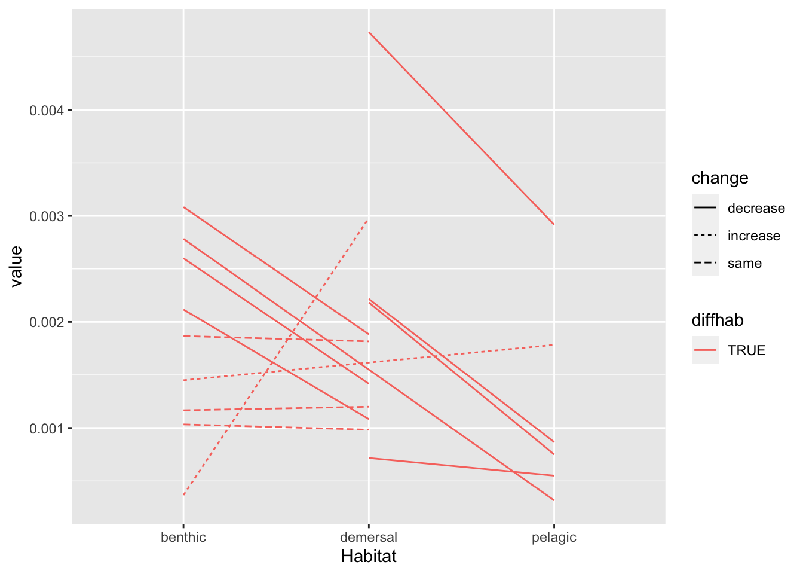
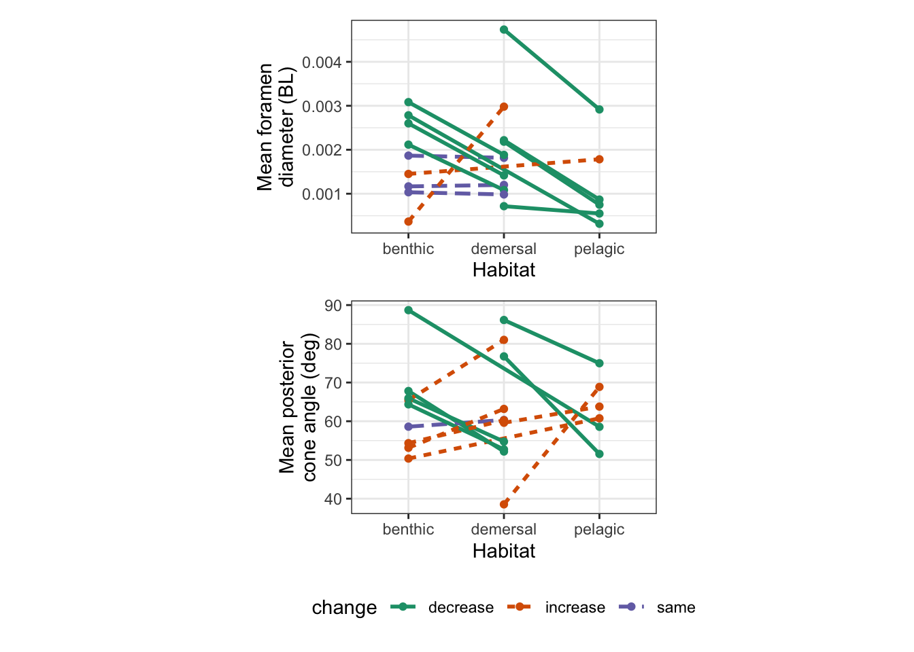

Last updated: 2022-04-11
Checks: 7 0
Knit directory: Code/
This reproducible R Markdown analysis was created with workflowr (version 1.7.0). The Checks tab describes the reproducibility checks that were applied when the results were created. The Past versions tab lists the development history.
Great! Since the R Markdown file has been committed to the Git repository, you know the exact version of the code that produced these results.
Great job! The global environment was empty. Objects defined in the global environment can affect the analysis in your R Markdown file in unknown ways. For reproduciblity it’s best to always run the code in an empty environment.
The command set.seed(20211230) was run prior to running the code in the R Markdown file. Setting a seed ensures that any results that rely on randomness, e.g. subsampling or permutations, are reproducible.
Great job! Recording the operating system, R version, and package versions is critical for reproducibility.
Nice! There were no cached chunks for this analysis, so you can be confident that you successfully produced the results during this run.
Great job! Using relative paths to the files within your workflowr project makes it easier to run your code on other machines.
Great! You are using Git for version control. Tracking code development and connecting the code version to the results is critical for reproducibility.
The results in this page were generated with repository version e47dde2. See the Past versions tab to see a history of the changes made to the R Markdown and HTML files.
Note that you need to be careful to ensure that all relevant files for the analysis have been committed to Git prior to generating the results (you can use wflow_publish or wflow_git_commit). workflowr only checks the R Markdown file, but you know if there are other scripts or data files that it depends on. Below is the status of the Git repository when the results were generated:
Ignored files:
Ignored: .DS_Store
Ignored: .Rhistory
Ignored: .Rproj.user/
Ignored: Flexibility Comparisons.nb.html
Ignored: Main.nb.html
Ignored: PGLS.FullData.nb.html
Ignored: PGLSforeachMeasFeature.nb.html
Ignored: PGLSwithPCA_Dims.nb.html
Ignored: PreppedVertMeas.nb.html
Ignored: ProcessCymatogasterFiles.nb.html
Ignored: ProcessFCSVfiles.nb.html
Ignored: TestingHabitatwithFriedmanData.nb.html
Ignored: Trilok_tree.nb.html
Ignored: VertLM.nb.html
Ignored: VertMeasLDA_Attempt.nb.html
Ignored: VertPGLS.nb.html
Ignored: VertPairs.nb.html
Ignored: analysis/.DS_Store
Ignored: analysis/10-VertLM.nb.html
Ignored: analysis/20-plot_phylogeny.nb.html
Ignored: analysis/21-plot_fits_and_summary.nb.html
Ignored: analysis/CheckSpeciesMatch.nb.html
Ignored: caper_test.nb.html
Ignored: data/.DS_Store
Ignored: ggtree_attempt.nb.html
Ignored: plot_example_data.nb.html
Ignored: plot_fits_and_summary.nb.html
Ignored: plot_phylogeny.nb.html
Ignored: renv/library/
Ignored: renv/staging/
Ignored: summarize_vert_meas.nb.html
Ignored: test_phylogeny.nb.html
Ignored: test_vertebraspace.nb.html
Ignored: vert_evol.Rproj
Untracked files:
Untracked: Main.html
Untracked: ProcessFCSVfiles.Rmd
Untracked: VertPGLS.html
Untracked: gg_saver.R
Untracked: output/BodyDistribution.pdf
Untracked: output/MasterVert_Measurements.csv
Untracked: output/mean_d_alphaPos_CBL.pdf
Untracked: output/pair_plot.pdf
Untracked: output/plot_example_data_figure.pdf
Untracked: output/stats_table.rtf
Untracked: plot_fits_and_summary.Rmd
Untracked: summarize_vert_meas.html
Untracked: testtree.csv
Untracked: vert_tree.csv
Note that any generated files, e.g. HTML, png, CSS, etc., are not included in this status report because it is ok for generated content to have uncommitted changes.
These are the previous versions of the repository in which changes were made to the R Markdown (analysis/22-VertPairs.Rmd) and HTML (docs/22-VertPairs.html) files. If you’ve configured a remote Git repository (see ?wflow_git_remote), click on the hyperlinks in the table below to view the files as they were in that past version.
| File | Version | Author | Date | Message |
|---|---|---|---|---|
| Rmd | 23908bd | Eric Tytell | 2021-12-30 | Test site build again |
| Rmd | edeae3c | Eric Tytell | 2021-12-30 | Rename notebooks to indicate order |
library(tidyverse)── Attaching packages ─────────────────────────────────────── tidyverse 1.3.1 ──✓ ggplot2 3.3.5 ✓ purrr 0.3.4
✓ tibble 3.1.4 ✓ dplyr 1.0.7
✓ tidyr 1.1.3 ✓ stringr 1.4.0
✓ readr 2.0.1 ✓ forcats 0.5.1── Conflicts ────────────────────────────────────────── tidyverse_conflicts() ──
x dplyr::filter() masks stats::filter()
x dplyr::lag() masks stats::lag()library(patchwork)
library(ggtree)ggtree v3.0.2 For help: https://yulab-smu.top/treedata-book/
If you use ggtree in published research, please cite the most appropriate paper(s):
1. Guangchuang Yu. Using ggtree to visualize data on tree-like structures. Current Protocols in Bioinformatics, 2020, 69:e96. doi:10.1002/cpbi.96
2. Guangchuang Yu, Tommy Tsan-Yuk Lam, Huachen Zhu, Yi Guan. Two methods for mapping and visualizing associated data on phylogeny using ggtree. Molecular Biology and Evolution 2018, 35(12):3041-3043. doi:10.1093/molbev/msy194
3. Guangchuang Yu, David Smith, Huachen Zhu, Yi Guan, Tommy Tsan-Yuk Lam. ggtree: an R package for visualization and annotation of phylogenetic trees with their covariates and other associated data. Methods in Ecology and Evolution 2017, 8(1):28-36. doi:10.1111/2041-210X.12628
Attaching package: 'ggtree'The following object is masked from 'package:tidyr':
expandlibrary(here)here() starts at /Users/etytel01/Documents/Vertebrae/Codeverttree <- readRDS(here('output/vert_tree.rds'))
verttree_data <- read_csv(here('output/vertdata_summary_lm_species.csv'))Rows: 77 Columns: 99── Column specification ────────────────────────────────────────────────────────
Delimiter: ","
chr (7): Species, Habitat, Water_Type, MatchSpecies, MatchGenus, FullName, ...
dbl (92): fineness, CBL_med, CBL_max, CBL_mn, d_med, d_max, d_mn, alphaAnt_m...
ℹ Use `spec()` to retrieve the full column specification for this data.
ℹ Specify the column types or set `show_col_types = FALSE` to quiet this message.verttree_data <-
as_tibble(verttree) %>%
left_join(verttree_data %>%
rename(label = FullName))Joining, by = "label"Look for pairs of species that have the same parent node but differ in habitats.
pairs <-
verttree_data %>%
filter(!is.na(Habitat)) %>%
group_by(parent) %>%
arrange(Habitat) %>%
mutate(nsib = n(),
diffhab = any(Habitat != first(Habitat)),
compare = str_c(str_sub(Habitat, start=1, end=1), collapse="-")) %>%
ungroup() %>%
filter(nsib == 2) %>% # & branch.length <= 100) %>%
select(-nsib) %>%
arrange(parent, Habitat)Then look at a few specific variables and see whether they increase or decrease across the habitats.
pairslong <-
pairs %>%
select(Habitat, parent, branch.length, d_mn, alphaPos_mn, diffhab, compare) %>%
pivot_longer(c(d_mn, alphaPos_mn),
names_to="var", values_to="value") %>%
group_by(var, parent) %>%
arrange(Habitat) %>%
mutate(change = case_when(abs(lead(value) - value)/value < 0.05 ~ 'same',
lead(value) > value ~ 'increase',
lead(value) < value ~ 'decrease')) %>%
fill(change) %>%
mutate(change = factor(change),
parent = factor(parent)) %>%
ungroup() %>%
arrange(var, parent, Habitat)
pairslong# A tibble: 92 × 8
Habitat parent branch.length diffhab compare var value change
<chr> <fct> <dbl> <lgl> <chr> <chr> <dbl> <fct>
1 pelagic 84 54.2 FALSE p-p alphaPos_mn 91.5 decrease
2 pelagic 84 54.2 FALSE p-p alphaPos_mn 85.5 decrease
3 benthic 90 47.5 TRUE b-d alphaPos_mn 67.8 decrease
4 demersal 90 47.5 TRUE b-d alphaPos_mn 52.2 decrease
5 demersal 94 82.5 FALSE d-d alphaPos_mn 67.2 increase
6 demersal 94 82.5 FALSE d-d alphaPos_mn 72.8 increase
7 demersal 96 126. FALSE d-d alphaPos_mn 73.8 increase
8 demersal 96 126. FALSE d-d alphaPos_mn 88.1 increase
9 demersal 99 104. FALSE d-d alphaPos_mn 68.2 increase
10 demersal 99 104. FALSE d-d alphaPos_mn 112. increase
# … with 82 more rowspairslong %>%
filter(var == 'd_mn' & diffhab) %>%
ggplot(aes(x = Habitat, y = value, group=fct_cross(var, parent), linetype = change, color=diffhab)) +
geom_line()
Construct a transformation for point size that is the inverse of branch lengths, so that long branches would have small points.
branch_len_trans <- function()
scales::trans_new('branch_len',
function(x) 400/x,
function(x) 400/x,
domain = c(0, Inf))Plot the pairs
paircolors <- c('#1b9e77','#d95f02','#7570b3')pairslong %>%
filter(diffhab, var == "d_mn")# A tibble: 26 × 8
Habitat parent branch.length diffhab compare var value change
<chr> <fct> <dbl> <lgl> <chr> <chr> <dbl> <fct>
1 benthic 90 47.5 TRUE b-d d_mn 0.00117 same
2 demersal 90 47.5 TRUE b-d d_mn 0.0012 same
3 demersal 101 129. TRUE d-p d_mn 0.00473 decrease
4 pelagic 101 129. TRUE d-p d_mn 0.00292 decrease
5 benthic 105 41.5 TRUE b-d d_mn 0.00187 same
6 demersal 105 41.5 TRUE b-d d_mn 0.00182 same
7 benthic 127 59.2 TRUE b-p d_mn 0.00278 decrease
8 pelagic 127 59.2 TRUE b-p d_mn 0.000317 decrease
9 demersal 128 29.1 TRUE d-p d_mn 0.00218 decrease
10 pelagic 128 29.1 TRUE d-p d_mn 0.00075 decrease
# … with 16 more rowspairplot <- function(df, varname) {
df %>%
filter(diffhab) %>%
filter(str_detect(var, varname)) %>%
ggplot(aes(x = Habitat, y = value, group=fct_cross(var, parent),
color=change, # shape = branch.length,
linetype=change)) +
geom_line(size = 1) + #, position = position_dodge(width = 0.2)) +
geom_point() + #alpha = 0.7) + # , position = position_dodge(width = 0.2)) +
scale_size(trans = "branch_len", range = c(1, 12)) +
scale_shape_binned() +
scale_color_manual(values = paircolors) +
labs(y = varname) +
theme_bw()
}
#p1 <- pairplot(pairs, "d_max")
p2 <- pairplot(pairslong, "alphaPos") +
labs(y = 'Mean posterior\ncone angle (deg)') +
theme(aspect.ratio = 0.7)
p1 <- pairplot(pairslong, "d_mn") +
labs(y = 'Mean foramen\ndiameter (BL)') +
theme(aspect.ratio = 0.7)
p1 / p2 + plot_layout(guides = 'collect') & theme(legend.position = "bottom")
pairslong %>%
filter(var == "d_mn") %>%
filter(diffhab) %>%
group_by(change, parent) %>%
summarize(change = first(change)) %>%
summarize(n = n(), pct = n()/13 * 100)`summarise()` has grouped output by 'change'. You can override using the `.groups` argument.# A tibble: 3 × 3
change n pct
<fct> <int> <dbl>
1 decrease 8 61.5
2 increase 2 15.4
3 same 3 23.1pairslong %>%
filter(var == "d_mn") %>%
filter(!diffhab) %>%
group_by(change, parent) %>%
summarize(change = first(change)) %>%
summarize(n = n(), pct = n()/13 * 100)`summarise()` has grouped output by 'change'. You can override using the `.groups` argument.# A tibble: 2 × 3
change n pct
<fct> <int> <dbl>
1 decrease 6 46.2
2 increase 4 30.8pairslong %>%
filter(var == "alphaPos_mn") %>%
filter(diffhab) %>%
group_by(change, parent) %>%
summarize(change = first(change)) %>%
summarize(n = n(), pct = n()/13 * 100)`summarise()` has grouped output by 'change'. You can override using the `.groups` argument.# A tibble: 3 × 3
change n pct
<fct> <int> <dbl>
1 decrease 6 46.2
2 increase 6 46.2
3 same 1 7.69pairslong %>%
filter(var == "alphaPos_mn") %>%
filter(!diffhab) %>%
group_by(change, parent) %>%
summarize(change = first(change)) %>%
summarize(n = n(), pct = n()/13 * 100)`summarise()` has grouped output by 'change'. You can override using the `.groups` argument.# A tibble: 3 × 3
change n pct
<fct> <int> <dbl>
1 decrease 4 30.8
2 increase 4 30.8
3 same 2 15.4ggsave(here('output/pair_plot.pdf'), width=3, units="in")Saving 3 x 5 in imagewrite_csv(pairs, here('output/vertdata_pairs.csv'))
sessionInfo()R version 4.1.2 (2021-11-01)
Platform: x86_64-apple-darwin17.0 (64-bit)
Running under: macOS Big Sur 10.16
Matrix products: default
BLAS: /Library/Frameworks/R.framework/Versions/4.1/Resources/lib/libRblas.0.dylib
LAPACK: /Library/Frameworks/R.framework/Versions/4.1/Resources/lib/libRlapack.dylib
locale:
[1] en_US.UTF-8/en_US.UTF-8/en_US.UTF-8/C/en_US.UTF-8/en_US.UTF-8
attached base packages:
[1] stats graphics grDevices datasets utils methods base
other attached packages:
[1] here_1.0.1 ggtree_3.0.2 patchwork_1.1.1 forcats_0.5.1
[5] stringr_1.4.0 dplyr_1.0.7 purrr_0.3.4 readr_2.0.1
[9] tidyr_1.1.3 tibble_3.1.4 ggplot2_3.3.5 tidyverse_1.3.1
loaded via a namespace (and not attached):
[1] nlme_3.1-153 fs_1.5.0 lubridate_1.7.10
[4] bit64_4.0.5 httr_1.4.2 rprojroot_2.0.2
[7] tools_4.1.2 backports_1.2.1 utf8_1.2.2
[10] R6_2.5.1 DBI_1.1.1 lazyeval_0.2.2
[13] colorspace_2.0-2 withr_2.4.2 tidyselect_1.1.1
[16] bit_4.0.4 compiler_4.1.2 git2r_0.29.0
[19] cli_3.0.1 rvest_1.0.1 xml2_1.3.2
[22] labeling_0.4.2 scales_1.1.1 digest_0.6.27
[25] yulab.utils_0.0.2 rmarkdown_2.10 pkgconfig_2.0.3
[28] htmltools_0.5.2 highr_0.9 dbplyr_2.1.1
[31] fastmap_1.1.0 rlang_0.4.11 readxl_1.3.1
[34] rstudioapi_0.13 farver_2.1.0 gridGraphics_0.5-1
[37] generics_0.1.0 jsonlite_1.7.2 vroom_1.5.4
[40] magrittr_2.0.1 ggplotify_0.1.0 Rcpp_1.0.7
[43] munsell_0.5.0 fansi_0.5.0 ape_5.5
[46] lifecycle_1.0.0 stringi_1.7.4 whisker_0.4
[49] yaml_2.2.1 grid_4.1.2 parallel_4.1.2
[52] promises_1.2.0.1 crayon_1.4.1 lattice_0.20-45
[55] haven_2.4.3 hms_1.1.0 knitr_1.34
[58] pillar_1.6.2 reprex_2.0.1 glue_1.4.2
[61] evaluate_0.14 renv_0.14.0 BiocManager_1.30.16
[64] modelr_0.1.8 vctrs_0.3.8 treeio_1.16.1
[67] tzdb_0.1.2 httpuv_1.6.4 cellranger_1.1.0
[70] gtable_0.3.0 assertthat_0.2.1 xfun_0.25
[73] broom_0.7.9 tidytree_0.3.5 later_1.3.0
[76] aplot_0.1.0 rvcheck_0.1.8 workflowr_1.7.0
[79] ellipsis_0.3.2